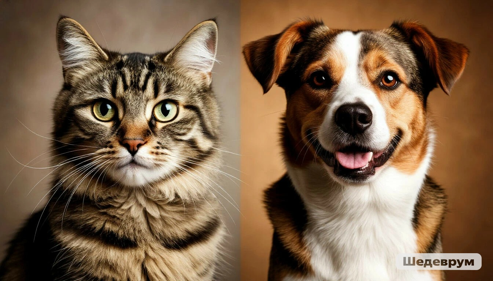

Как нейросети меняют жизнь школьника
Проект ученика 10 «А» класса Никиты
Привет! Меня зовут Никита. Этот сайт — продукт моего индивидуального проекта по информатике. Здесь я рассказываю, как искусственный интеллект (ИИ) и нейросети уже сегодня помогают нам учиться, творить и решать сложные задачи.
Нейросети не программируют по жестким правилам. Их обучают на примерах, как ребенка.
Пример: чтобы нейросеть отличала кошку от собаки, ей показывают миллион картинок с подписями. Со временем она сама находит закономерности (у кошки — острые уши, у собаки — вытянутая морда) и начинает узнавать новых животных на новых фото.

Рисунок 2 – Изображение, сгенерированное нейросетью Шедеврум
Чтобы нейросеть приносила пользу, а не вред, я создал эту памятку:
В рамках проекта я записал короткое видео о том, как использую нейросети в течение дня.